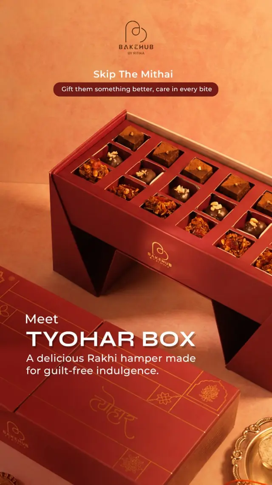

Meta ads management
Meta ads that close like Harvey Specter.
Bold strategy, in-house creatives and budget that chases what sells. Every week you see the numbers straight from Ads Manager. No spin, no fog.
Which agency runs Meta ads and makes the ads too?
Nuance Media is a performance marketing agency in Surat and Mumbai that manages Facebook and Instagram ads for D2C, B2B and ecommerce brands and makes the ad creatives and UGC videos in-house. Results so far include 7.11x ROAS in one month for a wellness brand and 203 leads at ₹58 each for a corporate gifting brand.
How we run Meta ads.
The same loop on every account. It’s boring on purpose, because boring compounds.
Audit
Pixel and events, account structure, past creatives, product margins. We find the leaks before spending a rupee.
Creative sprint
UGC hooks, statics and carousels, each built around one clear angle, so the results teach us something.
Launch and learn
Structured campaigns per product and funnel stage. Winners get budget, losers get switched off fast.
Report and scale
Weekly reports from Ads Manager by campaign. Then we scale what holds.
What’s included. What isn’t.
Included in Meta ads
- Account auditPixel, Conversions API, events, account structure, past creatives and product margins.
- Campaign structureSales campaigns per product, prospecting, retargeting and seasonal offers, each with its own job and budget.
- Lead generationWhatsApp chat, instant form and website lead campaigns for B2B, services and gifting.
- Ad creatives every monthStatics, carousels and UGC hooks, each built around one angle so results teach us something.
- Testing and scalingWinners get budget, losers get switched off. Budget steps up only while the return holds.
- Weekly reports and a callSpend, purchases, revenue, ROAS and cost per lead by campaign, from Ads Manager.
Things we won’t do with your money
- Boost posts and call it a strategy
- Report reach and likes as winsIf it didn’t sell or bring a lead, it isn’t a win.
- Run ads from an account you don’t ownYour ad account, your pixel, your data.
- Spend your full budget on day oneBudget follows proof.
- Hide the bad weeksYou see every week, good or bad.
203 leads. ₹58 each.
A corporate gifting push measured on cost per lead, not likes. Separate campaigns for WhatsApp chats and lead forms; in week two form leads went from 1 to 36.



Who this is for.
D2C brands
You sell your own products online and want purchases at a cost per sale that still leaves a margin.
Ecommerce stores
You have a catalogue and want product-level campaigns, retargeting and offers that don’t eat your profit.
B2B and lead-gen
You need enquiries, not orders. WhatsApp and lead-form campaigns measured on cost per qualified lead.
Meta ads questions.
What does a Meta ads agency do?
A Meta ads agency plans, builds and manages your Facebook and Instagram ad campaigns: account structure, audiences, budgets, creatives, testing and reporting. At Nuance Media we also make the ad creatives and UGC videos in-house, so the same team owns the result.
What is a good ROAS for Meta ads in India?
It depends on your margins. The useful number is your break-even ROAS: 1 divided by your margin after product, shipping and other costs. Anything above that makes money. Our guide to a good ROAS walks through the maths.
How much should I spend on Meta ads?
Enough for Meta to get roughly 50 conversions a week per ad set so it can learn. Multiply your expected cost per purchase by 50 to get a weekly starting point. See our budget guide.
How soon will I see results?
Campaigns usually go live in week three. The first two weeks after launch are for learning; you get a full report at the end of the first month, and we decide what to scale from there.
Do I keep my ad account and data?
Yes. Your ad account, pixel and data stay in your business, and we work through partner access.
Do you run Google ads too?
Yes, when people already search for what you sell. Google Search and Shopping sit beside Meta and the demand data helps shape the Meta ads.
Time is money. Let’s not waste it.
Tell us about your brand. You get a growth plan, not a pitch deck.